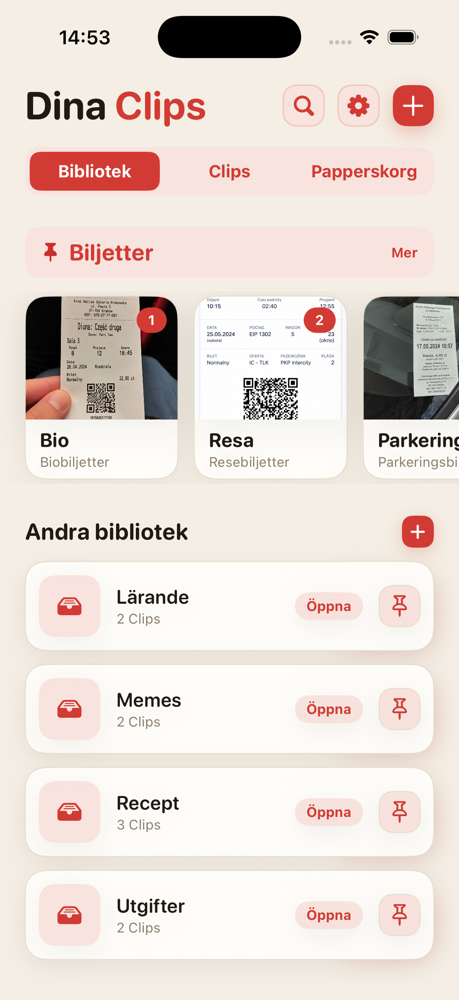
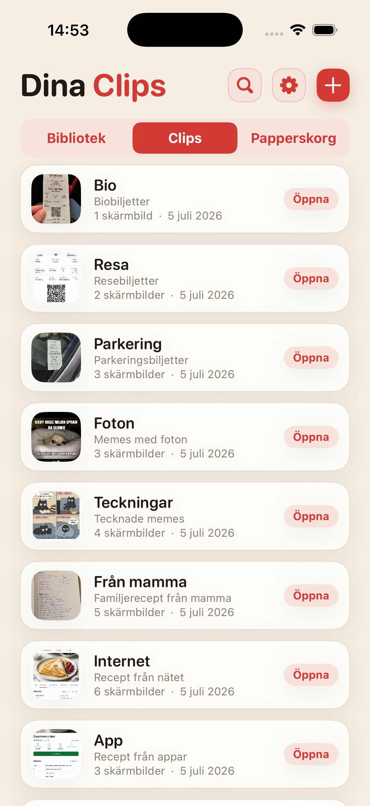
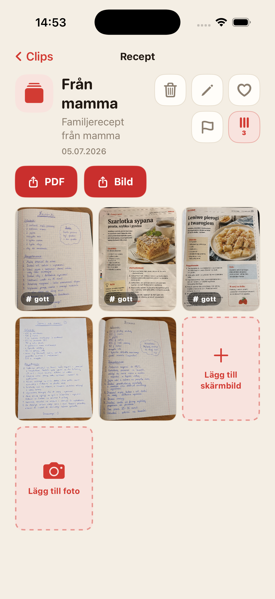
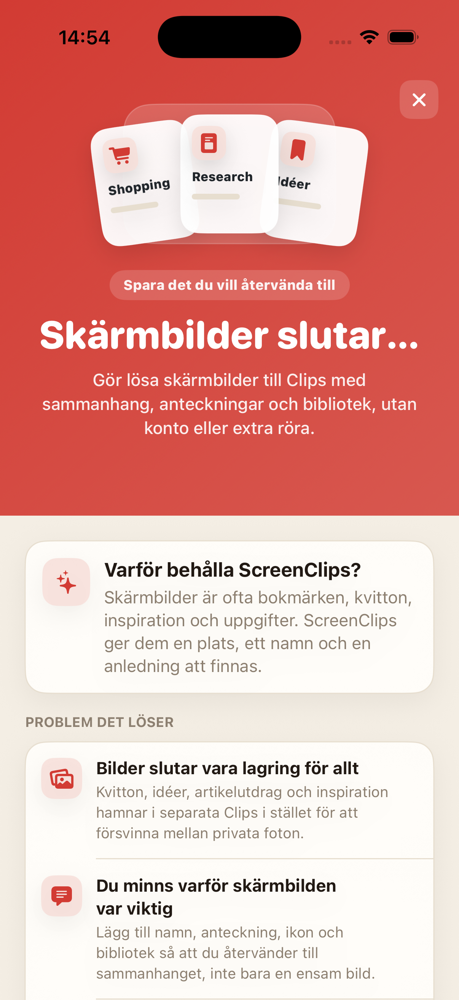

Skärmbilden drunknar i flödet
Du sparar något viktigt och en vecka senare bläddrar du i Bilder som om du letade i en gammal pärm.
Gör lösa skärmbilder till Clips med namn, anteckning och eget bibliotek. Inget konto, inget moln och inget dagligt grävande i kamerarullen.

Kvitton, recept, biljetter, idéer och artikelutdrag hamnar mellan selfies, memes och av misstag tagna bilder. Vi har molnlagring, men hotelladressen från förra veckan är ändå ett mysterium.
Du sparar något viktigt och en vecka senare bläddrar du i Bilder som om du letade i en gammal pärm.
En ensam bild räcker sällan. ScreenClips låter dig lägga till namn och anteckningar.
Shopping, jobb, resor och studier förtjänar egna platser, inte samma stora hög i Bilder.
Samla recept, kvitton, biljetter, research, studiegrejer eller annat du vill kunna hitta igen.
Ett Clip samlar allt kring ett konkret ämne. Det har ett namn, en beskrivning och egna skärmbilder.
Öppna biblioteket, välj Clipet och fortsätt där du slutade. Inga långa promenader genom kamerarullen.

ScreenClips försöker inte gissa allt åt dig. Det ger en enkel struktur: bibliotek för ämnet, Clip för saken, skärmbilder och foton inuti.
Samla innehåll i Clips och fyll på när ämnet växer.
När ett Clip ska skickas eller sparas utanför appen blir det en ren och enkel fil.
Där det förr bara fanns bläddrande och suckar får du favoriter, flaggor och ordning.

ScreenClips arbetar lokalt. Du behöver inget konto och behöver inte lämna kvitton, anteckningar eller planer till ännu en tjänst bara för att få ordning.
Premium gör inte appen krångligare. Det ger bara mer utrymme för bibliotek, Clips och skärmbilder. Priset visas i App Store.
Ladda ner påApp Store
Nej. När du tar bort en bild från ett Clip finns originalet kvar i Bilder.
Ja. ScreenClips är byggd som en lokal organisatör på din iPhone.
Nej. ScreenClips kräver inget konto för att ordna dina Clips.
Ja. När de hör till ett Clip kan du lägga till både skärmbilder och foton.
ScreenClips ordnar det du sparade till “sen”. Den här gången går “sen” faktiskt att hitta.
Ladda ner påApp Store